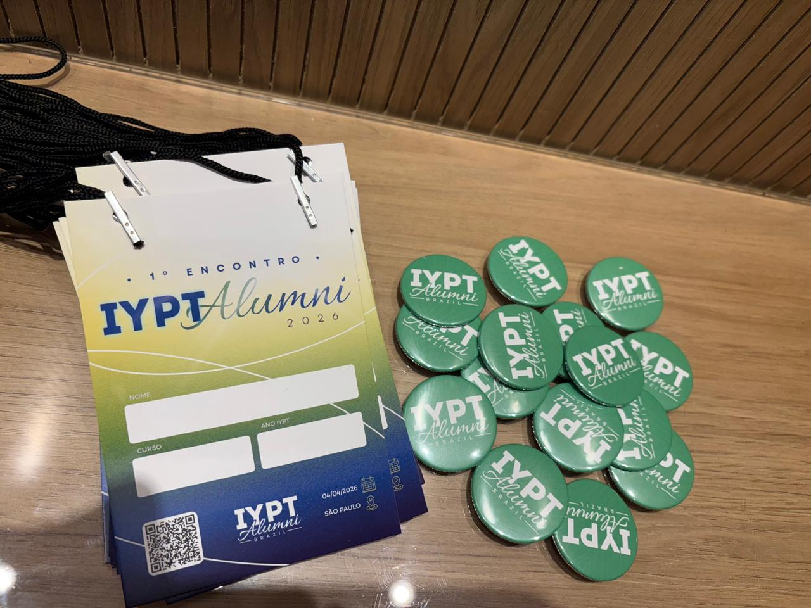
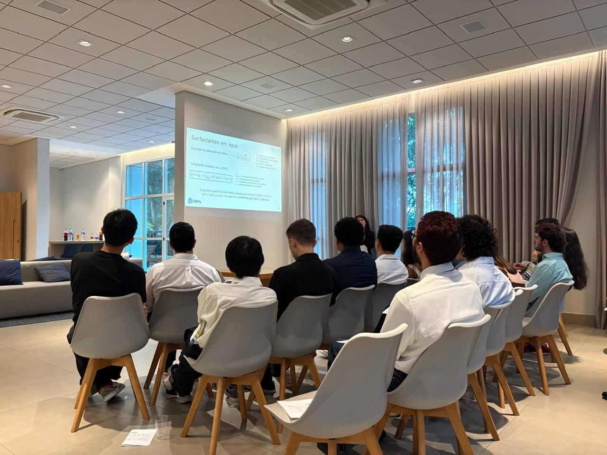
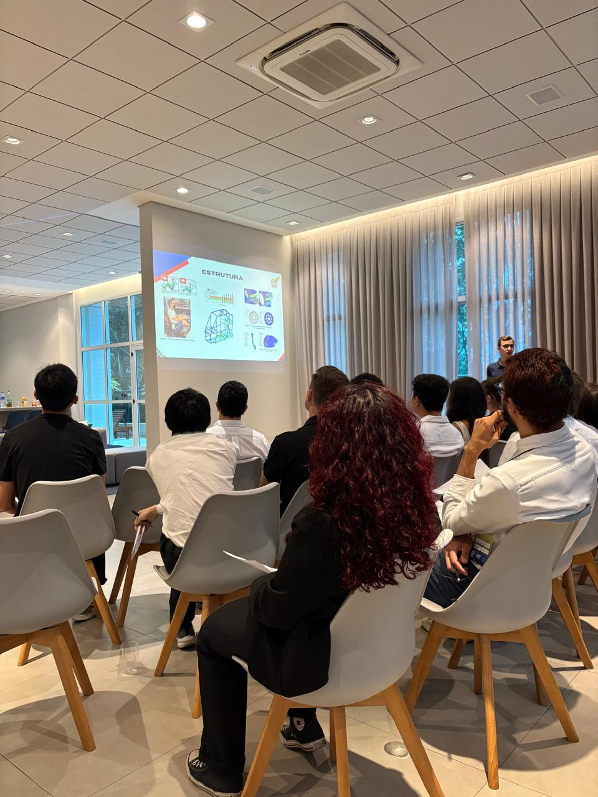

Uma rede independente de alumni brasileiros do torneio de física mais exigente do mundo. Se você passou por uma Physics Fight — você é alumni.
Em 4 de abril de 2026, 25 ex-participantes do IYPT se reuniram em São Paulo pela primeira vez para criar o IYPT Alumni Brazil: a organização que busca prestigiar e aumentar o impacto da Copa do Mundo da Física no Brasil.
Não somos uma organização formal. Somos alumni que lembram como é difícil preparar uma equipe sem referência, sem acervo, sem ninguém que passou por aquilo antes — e que decidiram mudar isso.



Não importa se foi há 2 anos ou há 10. Se você passou por uma Physics Fight, você é alumni — e tem espaço nessa rede.
O International Young Physicists' Tournament propõe 17 problemas abertos de física. Os estudantes passam meses investigando um fenômeno — montando experimentos, desenvolvendo modelos teóricos, programando simulações — e depois defendem suas conclusões em um debate estruturado chamado Physics Fight.
No Physics Fight, três papéis se alternam: o Relator apresenta sua solução, o Oponente questiona métodos e conclusões, e o Avaliador analisa o desempenho de ambos. Uma banca de doutores pontua cada papel.
É a única olimpíada de ensino médio que simula o processo científico completo — da pesquisa à defesa pública. Por isso, quem passa pelo IYPT sai diferente.
📄 Regulamento oficial IYPT BrasilO ciclo 2026–2027 vai de agosto a março. Mande uma mensagem — fazemos uma conversa inicial para entender o contexto da escola.
Entre em contato →Nove anos de disputas, rankings, confrontos diretos e Dream Teams — tudo no Fight Stats. Descubra quem foram os melhores representantes do Brasil e prepare sua equipe com dados reais.
Explorar Fight Stats →O ciclo 2026–2027 vai de agosto a março. Entre em contato para saber como participar.
iyptalumni@gmail.com